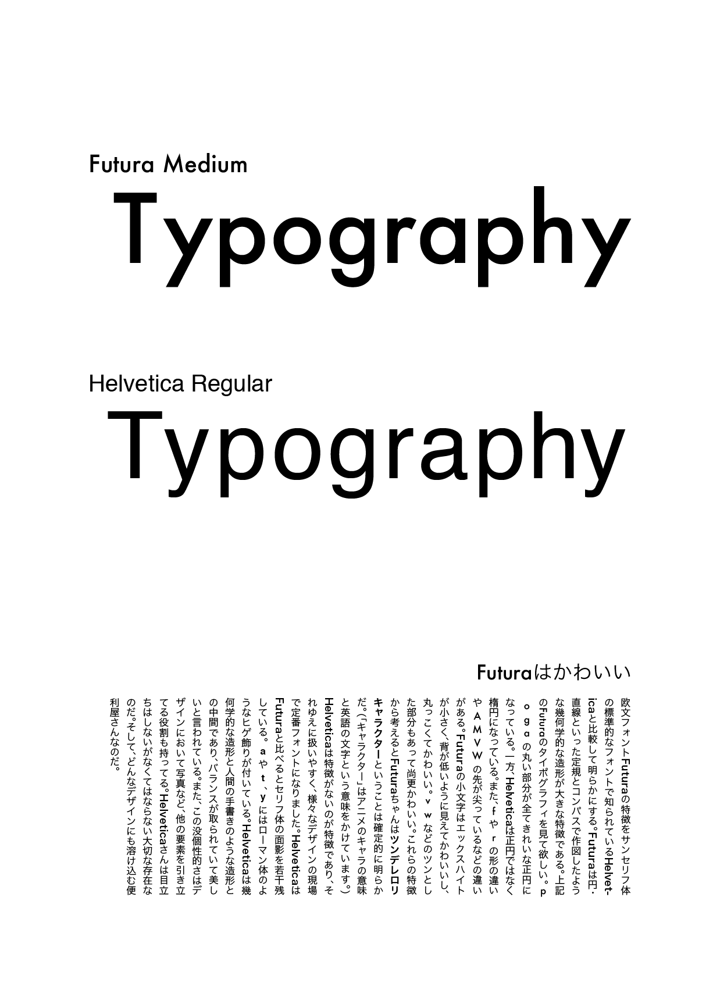
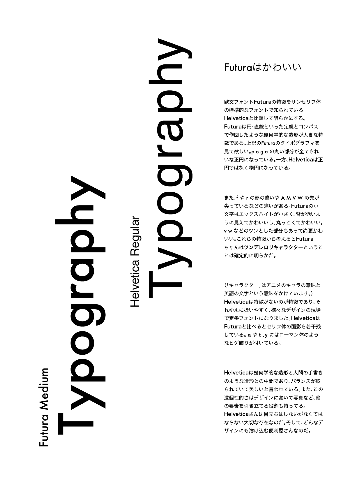

６,７期 グラフィックインフォメーション 授業課題
HelveticaとFuturaの比較
 Futuraはかわいい！
FuturaとHelveticaというフォントを比較しました。「Futaraはツンデレロリキャラクターだ」という切り口でFuturaのかわいさの秘密を考察しました。レイアウトにはFuturaの小文字を並べた時の印象を見せたかったので「Typography」という文字列を使いました。
制作ソフト Adobe Illustrator
製作期間 １週間
関連する作品